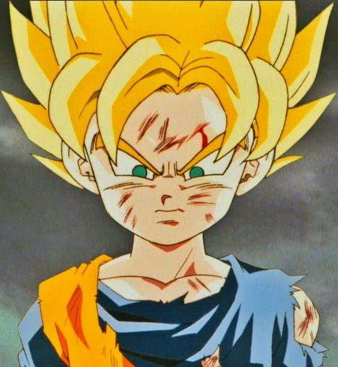

doblaje mexicana reconocida principalmente por ser la voz de Goku,
Gohan y Goten en sus respectivas etapas de niños en la franquicia de Dragon Ball,
Nobita Nobi en Doraemon y en Doraemon (2005), Shin-chan en Crayon Shin-chan y
Shippo en Inuyasha e Inuyasha Kanketsu-Hen: El acto final. También es conocida por
ser la voz de Tommy Pickles en Aventuras en pañales, su reboot y Rugrats Crecidos,
Alice Abernathy (Milla Jovovich) en las primeras películas de Resident Evil, y de Daria
Morgendorffer en Daria, entre muchos otros personajes.
|  |